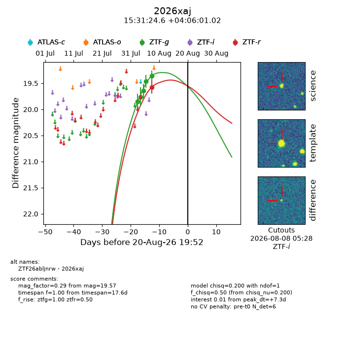
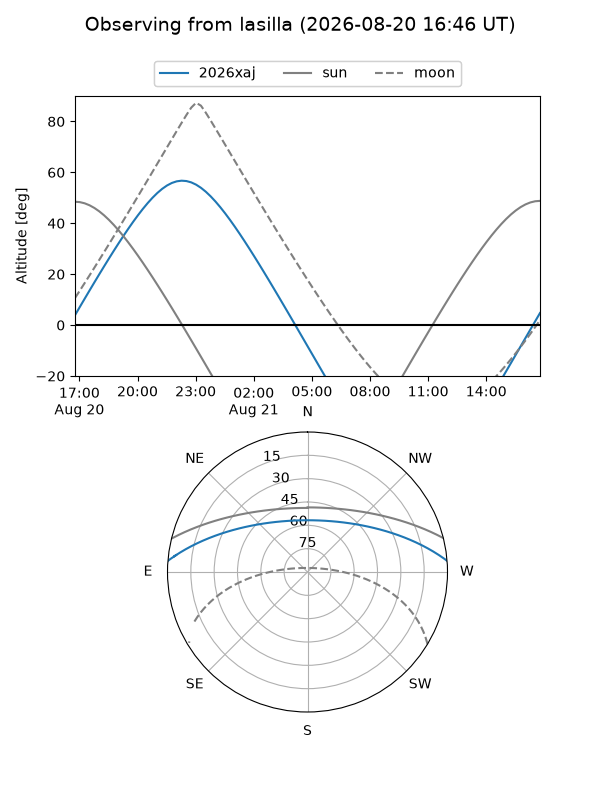
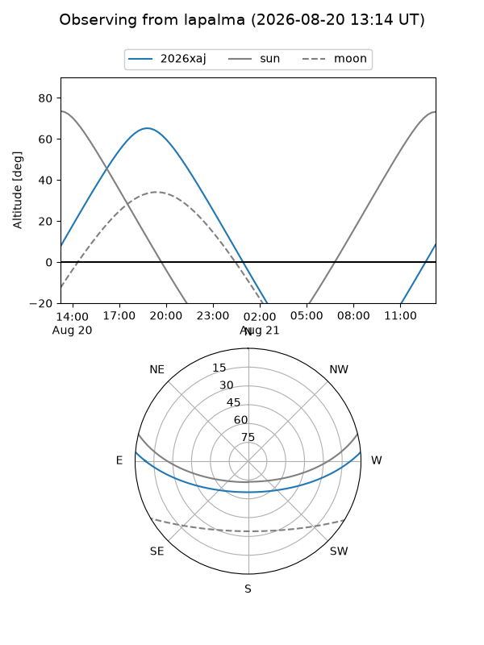
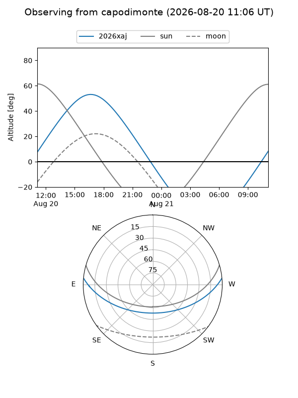
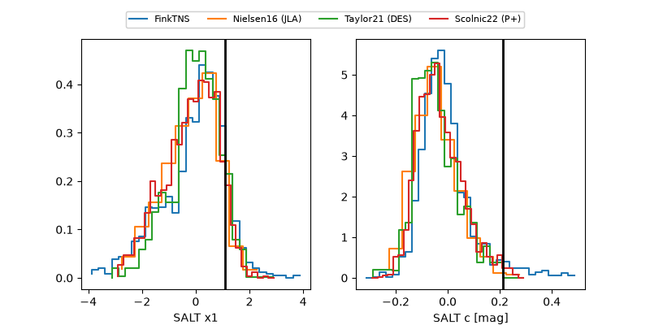

2026xaj
Target 2026xaj at 2026-08-21 06:42
Aliases and brokers:
FINK-ZTF: ztf.fink-portal.org/ZTF26abljnrw
Lasair-ZTF: lasair-ztf.lsst.ac.uk/objects/ZTF26abljnrw
ALeRCE-ZTF: alerce.online/object/ZTF26abljnrw
YSE-PZ: ziggy.ucolick.org/yse/transient_detail/2026xaj
TNS name: wis-tns.org/object/2026xaj
Direct TNS query: direct search
alt names
ZTF26abljnrw (ztf,fink_ztf)
2026xaj (tns,yse)
Coordinates:
equatorial (ra, dec) = 232.8527,+4.10028
equatorial (HMS+DMS) = 15:31:24.64,+04:06:01.02
galactic (l, b) = (8.9772,+45.45480)
Flags:
TNS type: nan
peak dt: +7.8
Photometry:
last ztfg=19.36, ztfr=19.57
5 ztfg, 1 ztfr detections
Lightcurve

Visibility



Additional plots
